2011
создаём пространственный опыт
Превращаем пространство в яркое впечатление.
Создаём музеи, выставки, бренд-пространства и интерактивные экспозиции — от первой идеи до запуска.
Потом превращаем это в сценарий, пространство и технологии.
Зачем это пространство существует.
Что человек делает и как проходит путь.
Что он чувствует и запоминает.
Что помогает этому произойти.
15 реальных проектов: музеи, выставки, бренд-пространства и общественные пространства.
Наши работы показывал канал Discovery. Среди клиентов — автопроизводители, международные аэропорты, национальные музеи и промышленные корпорации.
Авторские концепции. Сценарии. Форматы. Готовые к реализации.
Единая карта знаний и подходов студии: концепты, принципы, технологии, наблюдения, приёмы и исследования.
Не обязательно последовательно. Расскажите так, как рассказываете коллеге, — мы соберём основные смыслы в короткое описание проекта.
Любой наш объект считывается за 5 секунд и раскрывается за 5 минут. За 5 секунд ребёнок понимает, что делать. За 5 минут эксперт находит глубину.
Один объект — для всех зрителей сразу.
Креативное ядро ведёт каждый проект от идеи до запуска, а под задачу собирается точная команда: геймдизайнеры, 3D-художники, разработчики, инженеры.
Никакого раздутого штата — только те, кто нужен вашему проекту.
Основатель и креативный директор. В дизайне с 1999 года: графический, промышленный, мультимедиа. Выпускник Московской школы управления «Сколково». Лично ведёт каждый проект студии.
О студии рассказывали Discovery Channel и международные технологические программы. Проекты отмечены отраслевыми дипломами и наградами.
Если кажется, что проекту нужен нестандартный подход — давайте обсудим его вместе.
Мы выделим основные смыслы и соберём их в понятное описание проекта.
Мы будем собирать основные смыслы.
Следующий шаг — персональная креативная сессия с Андреем Судариковым.